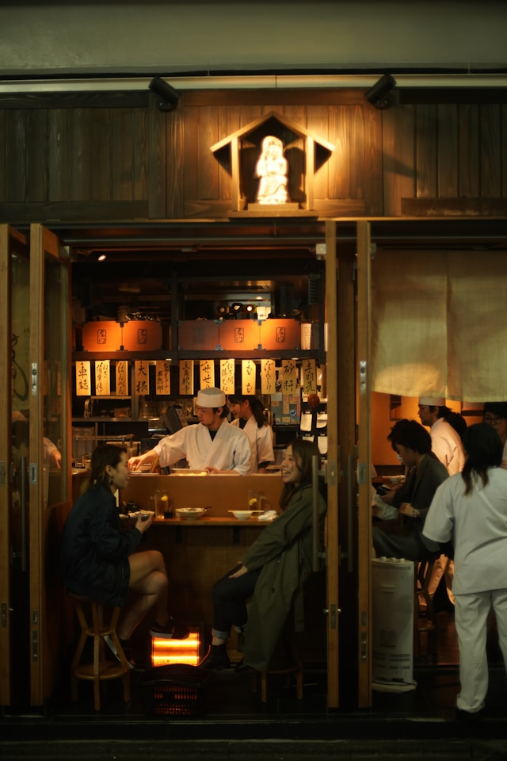
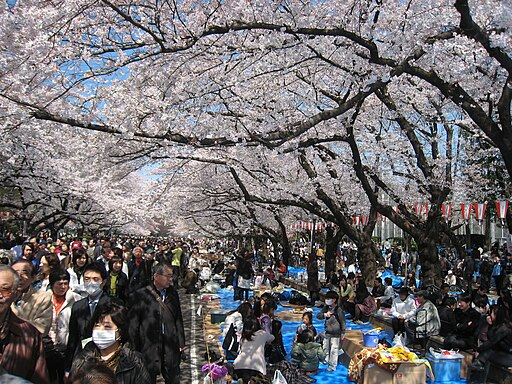

Distrito de Asakusa
Nos adentramos en el distrito de Asakusa perteneciente al barrio de Taitō, el cual ofrece mucha comida callejera y encuentras izakayas  Izakaya: es un típico bar o restaurante japonés, donde sirven tanto comidas como bebidas. Son muy populares para tomar algo después del trabajo. para probar la auténtica comida de Japón.
Templo Sensō-ji

Situado al noreste de la ciudad, está el templo Senso-ji. Es el templo más antiguo de Tokio (mucho más antiguo que el propio Tokio), y al que puedes llegar surcando la clásica calle comercial de Nakamise Dori. En el templo destaca la puerta de Kaminarimon, de la que cuelga una famosa linterna gigante.
Sensō-ji es un templo budista, el más antiguo de Tokio y uno de los más importantes. Está asociado a la secta budista Tendai, de la que se independizó después de la Segunda Guerra Mundial. Junto al templo se encuentra el santuario sintoísta de Asakusa.
Recomendaciones de comida del youtuber Japatonic
Japatonic nos recomienda probar el daifuku, un dulce japonés consistente en un pequeño mochi (pastel de arroz glutinoso) con un relleno dulce, comúnmente anko, pasta endulzada de judías azuki.
Este lugar tiene un melonpan super famoso, que es pan dulce con sabor de melón y dentro tiene relleno de helado de vainilla o de matcha.
Otra cosa que nos recomienda probar es una croqueta de curry con queso.
En Japón no está bien visto comer mientras caminas: ya que puedes manchar accidentalmente a otra persona, o que se te caiga la comida y tenga que limpiarlo otro comercio. Es por esto que piden que te detengas para comer frente al local donde has comprado tu comida. Y una vez has acabado, tirar la basura en la papelera del mismo establecimiento donde la compraste.
Distrito de Ueno
Parque Ueno
El Parque Ueno es un espacioso parque público localizado en el distrito de Ueno, perteneciente al barrio de Taitō. Este se encuentra en el lugar donde antes estaba el Kan'eiji, un templo asociado de forma cercana con el Shogunato Tokugawa, quienes construyeron el templo para vigilar el Castillo Edo contra el noreste. El templo fue destruido durante la Guerra Boshin.
Este parque fue establecido como una concesión territorial imperial a la ciudad de Tokio por parte del Emperador Taisho en 1924. El nombre oficial del parque es Ueno Onshi Kōen, que puede ser traducido como "Regalo imperial Parque Ueno."